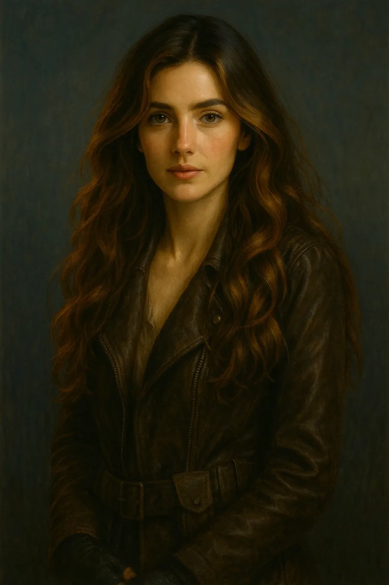

A reclusive scholar and amateur occultist. Precise, self-contained, quietly grief-adjacent. When the impossible arrives through his phonograph, he starts taking notes.
1999

Vivienne Harrow
Journalist · Blackthorn, 1999
Sharp, relentless, funny under pressure. She came to Blackthorn chasing a cold case and found something that has no file.